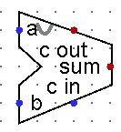
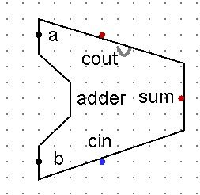

The Ripple-Carry Adder
Section 3.4 | Estimated time: ~0.7 hours
3.4 The Ripple-Carry Adder: Chaining to 8 Bits
You have a full adder. It adds one column: two bits and a carry coming in, producing a sum bit and a carry going out.
One column is not a number. To add two bytes you need eight columns, and the thing that connects them is already sitting on your full adder as an unused pin.
The construction
Place eight full adders side by side. Then wire them the way you were taught to add on paper, in first grade:
- The rightmost column — bit 0, the least significant — takes the circuit's own
cin. For plain addition that is 0. - Every stage's
coutbecomes the next stage'scin, running right to left, least significant to most significant. - The last stage's
cout— bit 7's — becomes the circuit'scout.
That is the whole design. Eight identical parts and a wire between each pair.
You do not wire forty gates. You build FULL_ADDER once, verify it against all eight rows of its truth table, and then place eight instances of it.
This is the habit the rest of the course is built on. In Week 6 you will place this entire 8-bit adder inside the ALU as a single component, the same way you are placing full adders inside it now. Each level hides the one below it — but the gates are all still there, doing exactly what you designed them to do.
If you have written object-oriented code before
Optional. If object-oriented programming is not something you remember clearly — or never quite clicked — skip this. Nothing later in the course depends on it, and the explanation above is complete on its own.
For those who do remember it, there is a close correspondence worth naming:
| In Logisim | In an OO program |
|---|---|
A circuit tab, e.g. FULL_ADDER | A class definition |
| Dragging that circuit onto another circuit's canvas | Creating an object of that type |
The eight full adders inside ADDER_8BIT | Eight separate objects of the same class |
| Input and output pins | The public interface |
| The gates inside the circuit | The implementation you stop looking at |
It explains why the tab name and pin names matter so much: they are the interface, and the same reasoning applies for the same reason.
- No state
- An object has fields. A circuit instance this week has nothing — no memory, nothing carried between one moment and the next. That is not a limitation of Logisim; it is what combinational means, and it is exactly the wall you will hit at the end of this week.
- No constructor arguments
- Every instance of
FULL_ADDERis identical to every other. You cannot pass one a parameter, and there is no way to make a wider or configured version. If you want something different, you build a different circuit. - Wired, not called
- This is the deep one. There is no call, no return, no order of execution. All eight full adders are computing at once, continuously, whether or not anyone is looking at them. A method runs when invoked and then stops; a circuit is never not running.
- Editing the definition changes every live instance, immediately
- Change one gate in
FULL_ADDERand all eight instances insideADDER_8BITchange behaviour on the spot. Most OO runtimes will not do that without restarting the program. It is also the single most useful property of subcircuits: fix a bug once, and it is fixed everywhere.
One thing not to take away from this. None of it says anything about how object-oriented languages are actually implemented on hardware. A Logisim subcircuit is an organising convenience at design time — the finished circuit is flat, and nothing about “objects” survives into the gates. How high-level constructs really become machine operations is a genuine topic in this course, and it starts in Week 8 with how arrays and records are laid out in memory.


10000001 + 10000001 case. Click to enlarge.Set cin's pull behaviour to pull-down so it resets to 0.
Left floating, the adder can come up holding a stale carry and give you a wrong answer by exactly one on your very first test — while every gate in the circuit is wired correctly. That is a genuinely miserable thing to hunt for.
What you have actually built
There is no software in this circuit. No instructions, no algorithm, no program, no loop counting through the bit positions.
You set the input bits and the answer appears — as fast as electricity can cross the gates. When your laptop adds two numbers, this is what happens: not a calculation performed, but a value that settles.
It is worth sitting with that for a moment, because it is the single idea this week exists to deliver. Addition is not something a computer does. It is something a computer is shaped like. The shape was decided when the circuit was wired, and after that the arithmetic is a consequence of physics rather than of instruction.
And the honest complication
The carry has to travel.
Bit 7 cannot decide its sum until it knows its carry-in. That carry-in is bit 6's carry-out, which bit 6 cannot produce until it knows its carry-in from bit 5, which waits on bit 4, and so on all the way down to bit 0.
So the answer does not appear everywhere at once. It resolves from right to left, and the circuit is not finished until the last stage has settled. It is fast — billionths of a second — but it is not instantaneous, and the delay grows with every bit you add to the width.
That is why it is called a ripple-carry adder. The carry ripples.
It is easy to read that as the circuit working through the columns one at a time, the way you would in code — do bit 0, then bit 1, then bit 2. That is not what happens, and the difference matters more than almost anything else this week.
All eight full adders are computing simultaneously and continuously. Every one of them is always producing an output from whatever is on its inputs right now. Nothing takes turns, nothing waits its turn, and nothing is ever switched off.
What ripples is not the work — it is the correctness. Bit 7 has been producing an output the whole time; it just was not producing the right one until its carry-in arrived and settled. The stepped mode in the simulator below shows the answer becoming true from right to left, which is exactly what happens, as long as you read it as stages becoming correct in sequence rather than stages running in sequence.
This is the fundamental difference between hardware and a program, and it will come back all semester: a program does one thing at a time; a circuit does everything, all the time. Making a circuit wait for anything is a problem you have to solve deliberately, and that is what the clock is for — starting next week.
The worst case is an addition where a carry is created at bit 0 and survives all the way to bit 7. 11111111 + 00000001 does exactly that: every single column produces a carry, and the final answer depends on a signal that has crossed all eight stages. There is a preset for it in the simulator below, and it is also the input pair Assignment 3 asks you to produce.
When the answer does not fit
Eight bits hold eight bits. Nothing else. So what happens when the true sum is bigger than that?
For this section we are reading these eight bits as an unsigned value, 0 through 255. Under that reading, a carry-out of 1 means the true sum was larger than 255, and the eight bits you can see are what is left over after the part that did not fit was pushed out the top.
The circuit does not fail, and it does not warn you. It raises cout, which is the hardware telling you plainly: there was more answer than there was room. Whether anyone pays attention to that line is a decision made elsewhere.
Unsigned overflow is what you are seeing here: the true answer exceeded 255, and the carry-out is the evidence.
Signed overflow is a separate condition with a separate detection rule. It happens when a two's-complement result has a sign that the operands' signs say it should not have — two negatives producing a positive, for instance. Carry-out is not how you detect it.
The same adder hardware produces both. What differs is how you are choosing to read the bits. The circuit has no idea which one you meant — it just adds. This week is unsigned throughout; Week 6 is where that choice gets made deliberately, inside the ALU.
The simulator below defaults to a plain addition with no carry-out at all, because that is the normal case. The dramatic ones are presets.
Where this circuit is going

The adder you build this week becomes the arithmetic core of the ALU, instantiated unchanged. Not rebuilt, not redesigned, not improved. The same circuit, placed inside a larger one.
That is why the pin names and widths in the assignment are not a formatting preference. ADDER_8BIT with pins a, b, cin, sum, cout is an interface, and Week 6 is written against it.
A note on speed, for the curious
Real processors do not use ripple-carry adders for wide arithmetic, and now you know why: the delay grows with every bit, and a 64-bit ripple-carry adder would have to wait for a carry to cross sixty-four stages.
The fix is a family of designs — carry-lookahead being the best known — that compute in advance whether each column will generate a carry, rather than waiting to be told. They are faster and substantially more complex, and they compute the same answers.
We are not building one. The ripple-carry adder is the design that makes the mechanism visible, which is what it is for here. But you should know that it is the simple design rather than the only one, and you should know what the simplicity costs.
Adders are one of the week's two families — the circuits that compute. The next page is the other family: circuits that select.
Those two pages are independent of each other. If the carry chain has not settled in your head yet, you can move on to decoders and come back — nothing on the next page depends on this one.